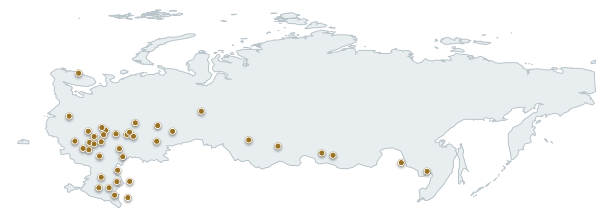

Физическим лицам
Судебная реструктуризация, банкротство, снижение долговой нагрузки, защита имущества и дохода.
Ваш партнёр в судебной реструктуризации, банкротстве, взыскании задолженности и защите от субсидиарной ответственности — для физических и юридических лиц.
Работаем с долгами, имуществом и бизнес-рисками. Помогаем физическим лицам, компаниям, должникам, кредиторам, руководителям и собственникам бизнеса.
Судебная реструктуризация, банкротство, снижение долговой нагрузки, защита имущества и дохода.
Работа с задолженностью компании, банкротными процедурами, реструктуризацией обязательств и спорами с контрагентами.
Взыскание задолженности, сопровождение судебных споров и защита интересов в банкротстве должника.
Субсидиарная ответственность: защита от привлечения или представление интересов стороны, которая требует взыскания.
На консультации не обещаем результат заранее. Сначала вникаем в обстоятельства, оцениваем перспективы и только потом говорим, имеет ли смысл начинать работу.
Вникаем в ситуацию, долги, имущество и вашу цель. Если для оценки нужны документы, сразу говорим, какие именно.
Объясняем, можем ли помочь, какие есть риски и шансы, какие варианты решения возможны.
Рассказываем, что считаем нужным сделать, как будет построена работа и сколько она будет стоить.
После консультации вы спокойно решаете, готовы ли начинать работу. Давления и навязанных услуг нет.
Можно поручить нам конкретную юридическую задачу или передать ведение дела полностью.
Берём согласованную задачу, чётко определённую в договоре: например, готовим позицию, ведём суд.
Сами определяем необходимый объём работы и ведём дело целиком: документы, суды, переговоры, взаимодействие с кредиторами и управляющими.
В обоих форматах работаем без предоплаты, остаёмся на связи и регулярно сообщаем о ходе дела.
Любая юридическая компания скажет, что она надёжная и опытная — это не аргумент, это просто слова. За нами — многолетняя история реальных дел, и, в отличие от чужих обещаний, каждое из них можно проверить.
Судебные решения — открытая информация: даты, номера дел и исход есть в публичном доступе. Позвоните или напишите нам — подберём из нашей практики дело, похожее на вашу ситуацию, и расскажем, как оно было решено. Так вы сможете сами убедиться, что такой подход работает.
Отметили регионы, в которых уже завершали судебные процессы. По запросу подберём дело из практики, похожее на вашу ситуацию.

Калининградская область Санкт-Петербург и Ленинградская область Москва и Московская область Тверская область Ярославская область Владимирская область Тульская область Рязанская область Калужская область Смоленская область Воронежская область Липецкая область Белгородская область Курская область Нижегородская область Самарская область Саратовская область Волгоградская область Ростовская область Краснодарский край Ставропольский край Свердловская область Челябинская область Новосибирская область Красноярский край Иркутская область Забайкальский край Республика Дагестан Хабаровский край Приморский крайДля физических лиц, бизнеса, кредиторов, руководителей и собственников.
Через суд добиваемся нового графика выплат, снижения долговой нагрузки и пересмотра начислений. Помогаем сохранить имущество и официальный доход.
ПодробнееСопровождаем процедуру списания долгов. Заранее оцениваем риски и используем законные возможности, чтобы сохранить максимум имущества.
ПодробнееПомогаем компании пересмотреть условия обязательств, снизить давление кредиторов и выстроить реалистичный план расчётов.
ПодробнееСопровождаем банкротные процедуры, защищаем интересы компании, её руководителей и собственников, работаем с кредиторами и активами.
ПодробнееВозвращаем задолженность: от претензии и переговоров до суда, исполнительного производства и банкротства должника.
ПодробнееЗащищаем от привлечения к ответственности по долгам компании: анализируем риски, готовим позицию и представляем интересы в суде.
ПодробнееОставьте имя и телефон — юрист свяжется с вами в рабочее время.
Приглашаем вас в уютный офис в центре Москвы. Встречу необходимо согласовать заранее: в здании действует пропускной режим. Первичная консультация бесплатна.
Москва, ул. Кузнецкий Мост, д. 21/5, подъезд 3, этаж 3, офис 3033
м. Лубянка / Кузнецкий Мост
Пн–пт: 11:00–19:00
Сб: 11:00–17:00